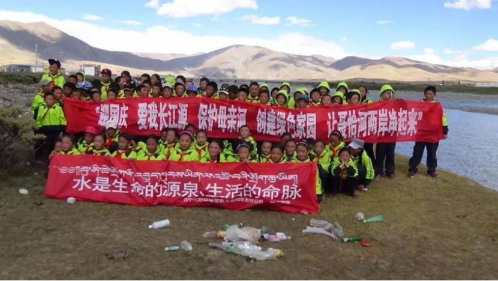
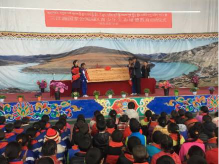
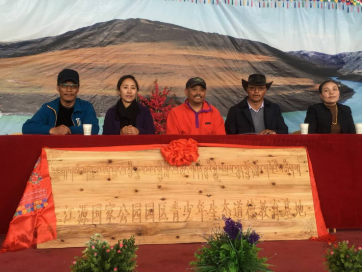

2017年5月，青海省三江源生态环境保护协会、吉尕小学、上海若水队三方合作开展了为期一年的“三江源国家公园园区青少年生态道德教育”系列活动

治多县吉尕小学12个教学班共计560多名师生以及周边部分社区居民和学生家长在三江源生态环境保护协会秘书长哈希·扎西多杰、教育局副局长梅少措毛和才仁旦导校长的参与带动下，一方面，集中学习了扎多老师的“自然生态环境与生态伦理教育”；另一方面，根据学校开展教育的实际需求，三江源生态坏境保护协会工作人员与学校教师共同布置了相应的项目活动室。

此项目旨在积极引导青少年学生从小处着眼了解环保，从小处着手实践环保，养成保护环境从我做起的意识，通过自身正能量影响身边的人，重视自然生态保护，减少对环境的人为破坏。此项目结合2012年起开展的“中国水学校”活动和2016年的“同饮一江水、共护母亲河”主题活动，延续传统，继续组织学生徒步白螺湖；突出特色，培训生态小记者和摄影家，了解和掌握自己在生态保护中的工作内容及可行方式。
